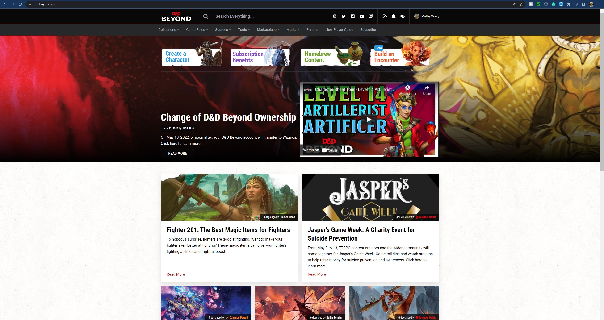
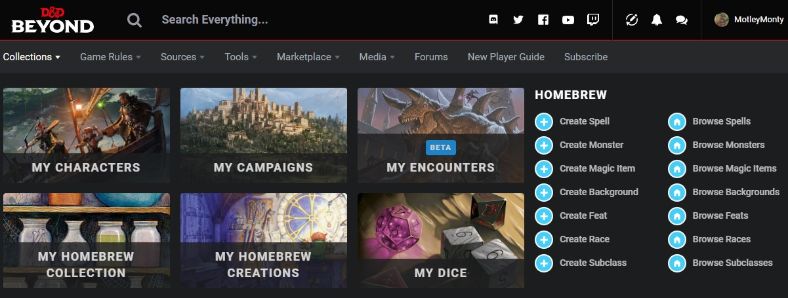
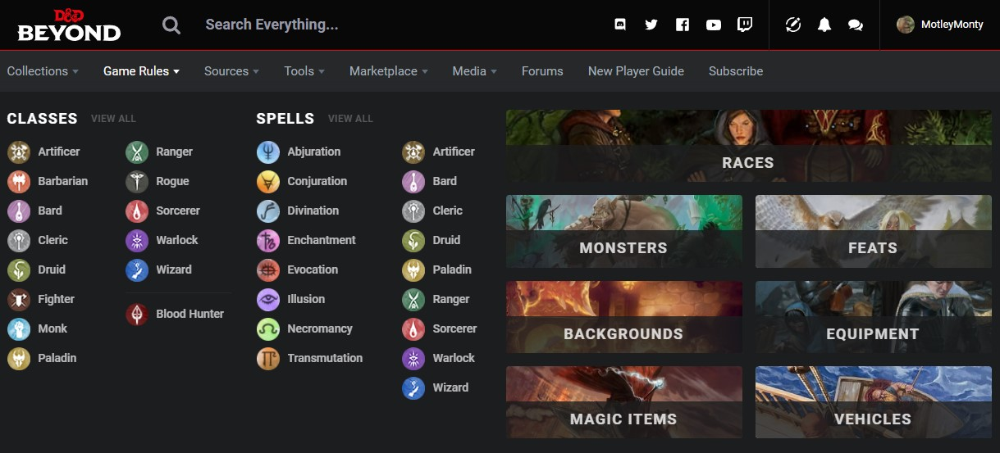
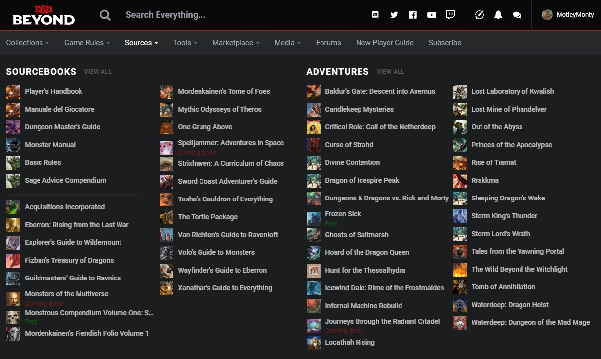
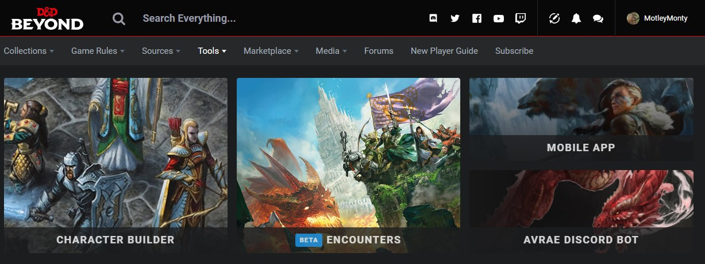
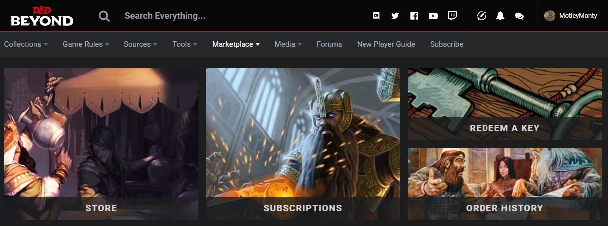
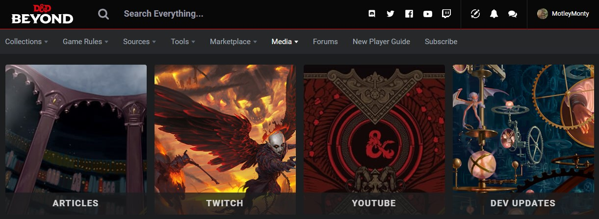

PROTOTYPES
I intend to include a simplified version of
each of the following screenshotted items in my
next rendition of a suitable website.
A screenshot of dndbeyond landing pageAt a first glance, the landing page is not overwhelmingly informative,
but you will see that if you hover over any of the navbar menus,
the information can be easily overloading.

A screenshot of dndbeyond's 'collections' menu
The collections menu is not an ideal amount of information,
however it is not the worst of offenders in this listing page.

A screenshot of dndbeyond's 'rules' menu
It quickly becomes pretty daunting when you hover over this menu,
due to the sheer amount of text that originates from a Single/Two Word
menu title.

A screenshot of dndbeyond's 'sources' menu
This is major offender for overloading of information
delivered in such a short amount of time,
If this menu had either a filtering option or a search option,
navigating this small menu would be so much easier

A screenshot of dndbeyond's 'tools' menu
The Tools menu is nice and simple with its information delivery.

A screenshot of dndbeyond's 'marketplace'menu
The Marketplace menu shares the simplicity of the Tools menu. 
A screenshot of dndbeyond's 'media' menu
Whilst the links within this menu are clearly labelled and easy to understand,
the images dont quite match the goals of the link.
